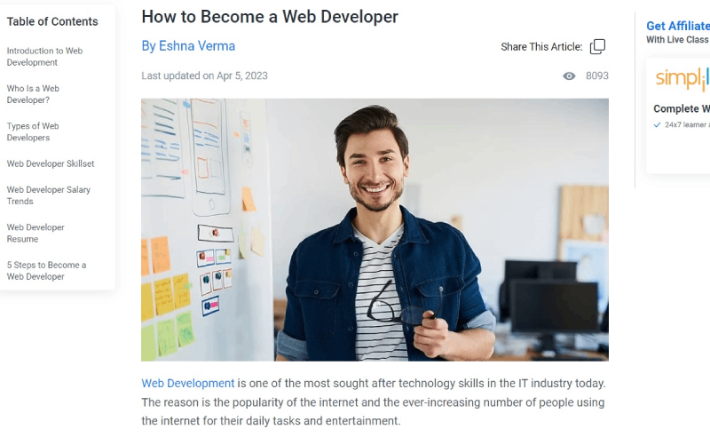
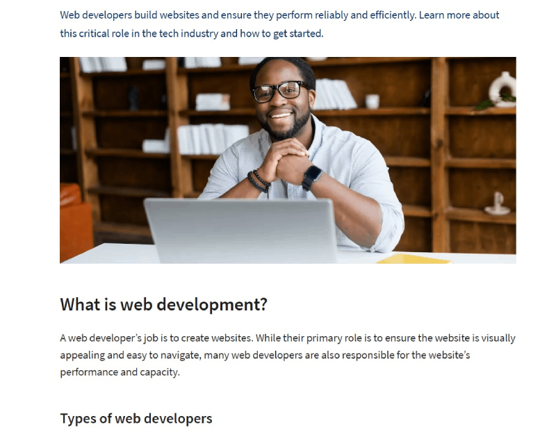
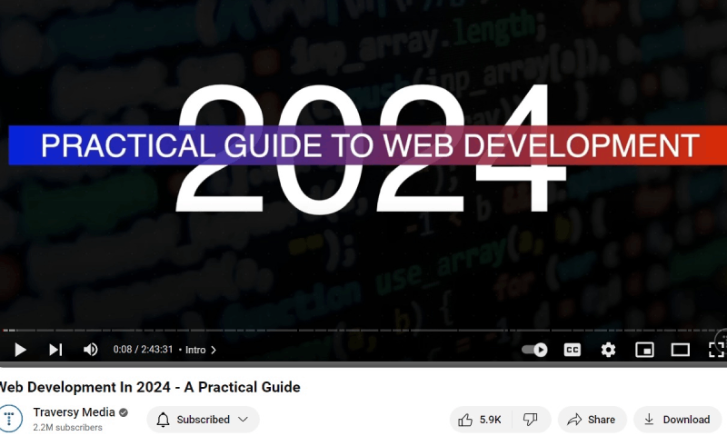

WEBSITES ARTICLES
SIMPLILEARN
SIMPLILEARN is an IT website where we can find Articles ,Ebooks,Free Practices Tests,Tutorials,on Web
Development.They explain what is web development .They give a summary on how to become a web
developer.Some technologies to used ,and how to write a resume to get a job after your training.
Click here
SIMPLILEARN to find more information about their website.

This website is very interesting because we can even if you dont have a background on IT,you can learn
some tips on their content ,for your first step in IT,and some online course .They give you an idea on
how much you can earn
when you are a complete web developer. Also,they offer free advices on how to become a
web developer and how to write your resume to get a job.
COURSERA
COURSERA is a website which explain and give information about web development,who is a web
developer,what he does,and how to become one. They also offer online course.they explain the difference
betweenFROND-END web developers and FULL-STACK developers. They give
us some tasks and responsabilities of a web developer
Click here
COURSERA to find more information about their website.

We can find free course,we can earn a degree ,or IBM full-stack professional certificate through their
website .Click here IBM
for professional certificate. This website is also very interesting because we can find more information
about others resources like META FROND-END developer and IBM , degree and certificate
that they offer.
CODECADEMY
CODECADEMY is a website which offer free tutorials and courses to learn HTML ,CSS,JAVASCRIPT,and more.
They also covered some topics in WEB DESIGN,SQL,C++,GIT,PYTHON ... They offer courses for beginners
,intermediates,advanced learners ,with free or paid plans.
Click here
CODECADEMY to find more information about their website.

This website is very user-friendly and informative because they explains topics very well,in details.
Their website is also attractive because of their style,and the way they displays their content.We can
also find some examples of code and some projects to work on,when you fininsh to exercise their course
or tutorials.
YOUTUBE CHANNEL
TRAVERSY MEDIA
TRAVERSY MEDIA is a youtube channel of Brad, that has 2.2 milloins of subscribers. This channel talks
about WEB DEVELOPMENT technology,Graphic design and others topics in IT.He really
explains on his channel ,how to practice and code everyday.He talks a lot about JAVASCRIPT,and gives some
tips on how to use those in our code. His videos are really clear and user-friendly.
Click here
TRAVERSY MEDIA to find more information about this youtube channel.

I found his youtube channel vidoes very interesting because, it explains more about web developers roles,
goals,essentials tools in web development environment. He also explains some topics like HTML,CSS,CSS
frameworks,JAVASCRIPT ,WORDPRESS... At the end of video ,he gives some tips on how to get a job in web
development in 2024.